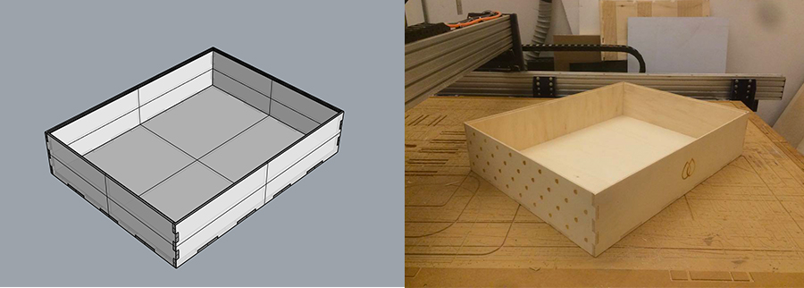
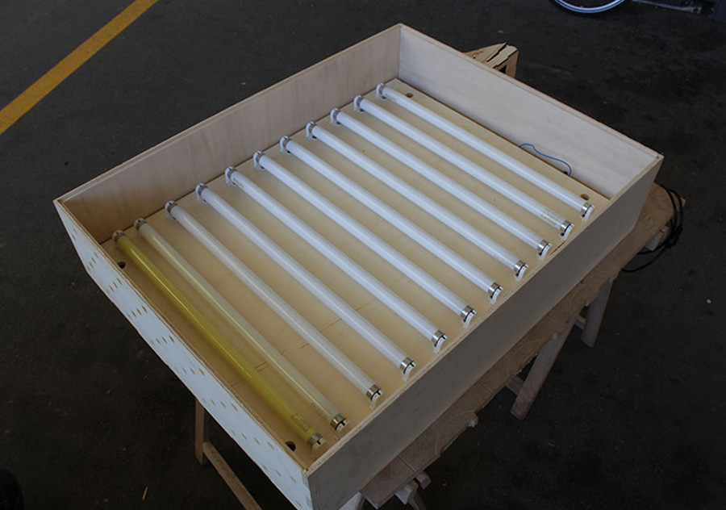
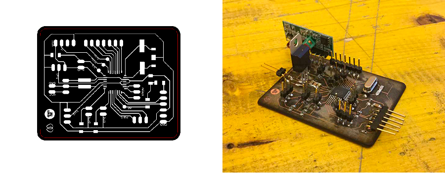
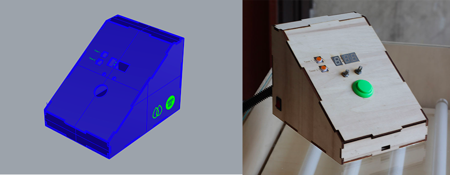

Fabbable Exposure Unit
Prototyping
At the beginning of 2016 I've attended the FabAcademy at Opendot, a digital fabrication class with a distribuited educational model: students learn in local workgroups, with peers, mentors, and machines, which are then connected globally by content sharing and video for interactive classes. As final project I decided to produce an exposure unit with a programmable timer, for my friends in the silkscreen lab Sacrèm.
As first step I've designed, milled and built the structure and wired all the lamps and ballasts.

I've designed and fabricated the circuit of the timer starting from the satshakit a fabbable version of an arduino.

And finally the timer box that contains the electronics and the physical interface made of potentiometers and buttons.

This is the result, for further informations visit my FabAcademy portfolio